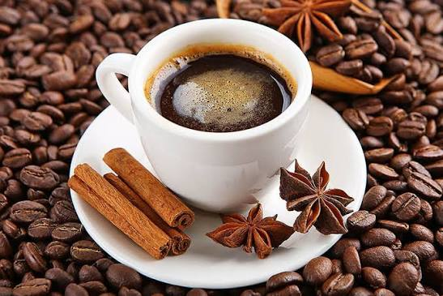
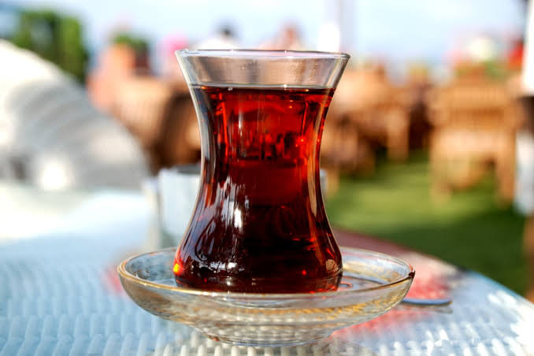
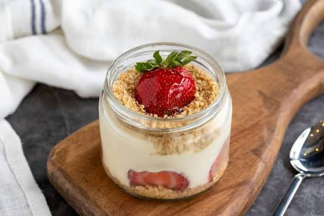
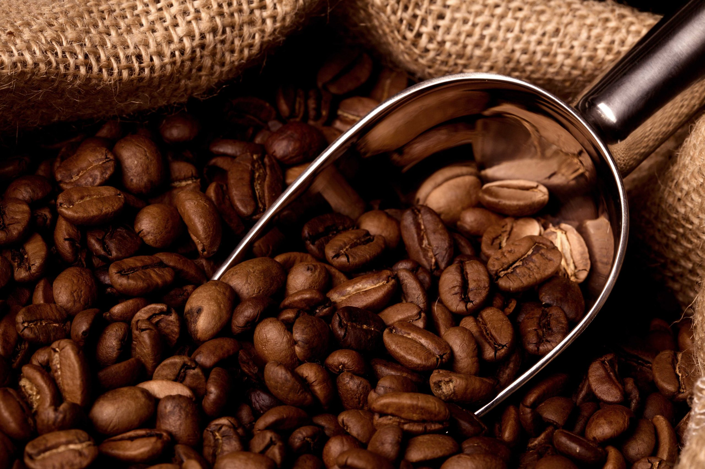

Gerçek Artizan Kahve Deneyimi.
Özenle seçilmiş Pablo Artisan Coffee çekirdekleriyle hazırlanan eşsiz lezzetler.

Doğanın Tazeleyici Etkisi.
Rahatlatıcı bir mola için özel kurutulmuş doğal Hibiskus ve bitki çayları.

Kendinize Bir Vakit Ayırın.
Huzurlu ortamımızda lezzetli tatlılar ve güzel anlar sizi bekliyor.

Özel Demlemeler
Taze kavrulmuş çekirdeklerden filtre, espresso ve sütlü spesiyaller.

Bitki Çayları
Sıcak ya da soğuk, içinizi ferahlatacak yoğun aromalı bitki harmanları.

Günlük Tatlılar
Kahvenizin yanına en çok yakışacak günlük hazırlanan butik tatlılar.
Çekirdekten fincana. Kaliteden ödün vermiyoruz.
Misafirlerimize her zaman en iyi deneyimi sunmak için premium kalite çekirdekler kullanıyoruz. Kendine has kavurma profiliyle hazırlanan kahvelerimiz, her yudumda yoğun bir aroma vadediyor.

Doğal ve taze. Ferahlığın tadını çıkarın.
Günün yorgunluğunu atmak için iyi demlenmiş bir bitki çayından daha güzel ne olabilir? Rengiyle büyüleyen ve ferahlatan seçeneklerimizle doğallığı ön planda tutuyoruz.